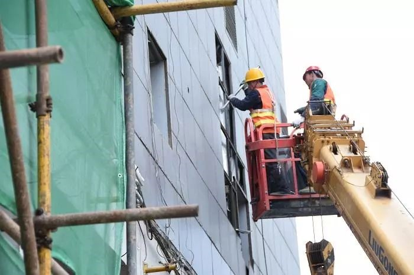
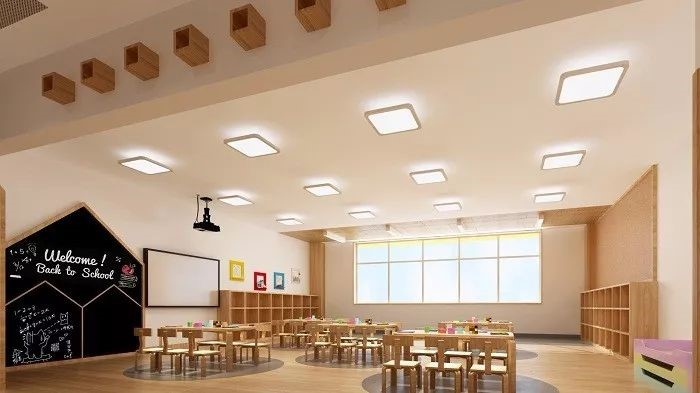
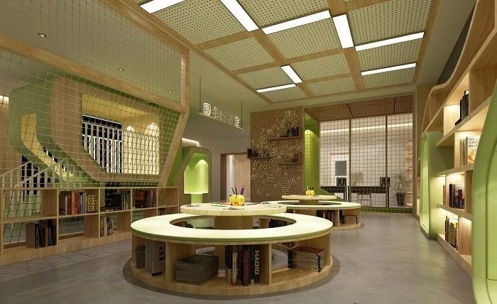
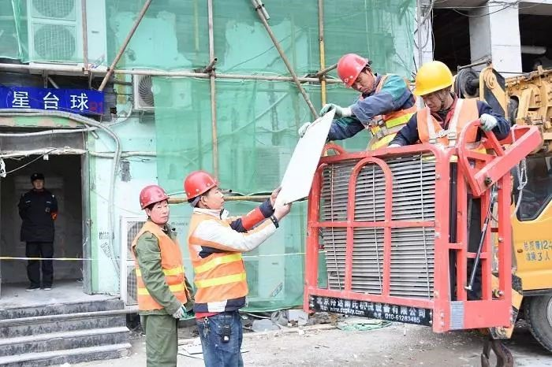

拆除违建， 这里将变幼儿园活动区！
来源：北京东城

昨天下午，东花市街道联合城管、消防、安全等部门，将位于广渠门桥东北角的忠实里南街甲6、乙6号楼西南角的一处四层、建筑面积800余平方米的钢混结构违法外接建筑物拆除。该处违建拆除后，将用作周边新建幼儿园的活动空间。
违建毗邻幼儿园
这处违建一层为空置状态，二至四层用作酒店餐厅、设备间、库房，建筑的底部支撑不牢，加上建筑内存在私拉电线，消防设施缺失，杂物挤占疏散通道等问题，埋下了许多安全隐患。北侧、东侧的原有承重墙被额外增加了四层楼的重量，犹如一位负重的老人，随时有倒下的危险。东花市街道办事处主任于家明表示，这处违建毗邻正在建设的双语幼儿园，给幼儿园带来安全隐患。为及时消除安全隐患，对该处违建依法予以拆除。
在建幼儿园规划效果图
腾退空间用于幼儿活动区
新建的幼儿园将为周边居民提供约300个学位，现有的幼儿园空间面积有2000多平方米，预计今年五六月份开始招生。该处违建拆除后，其腾退空间将重新建设成为幼儿园的活动空间。
在建幼儿园规划效果图
配套建设立体停车场
据了解，该处违建周边此前已拆除1600余平方米违建，腾退3000余平方米空间。于家明表示，为实现综合提升，在紧邻幼儿园西侧的空地上，还将建设一座立体停车场，满足周边老百姓的停车需求，大约能提供180个车位。“争取这个立体停车场能跟幼儿园同时建起来。”
据了解，去年全年东花市街道拆除违法建设434处，拆违面积达2.43万平方米，腾退面积1.5万平方米。于家明表示，今年街道还将继续拆除6000余平方米的违建，届时将实现平面在账的违建全部拆除，争取用两年时间完成三年拆违任务。
关闭当前页